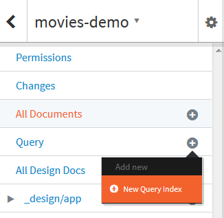
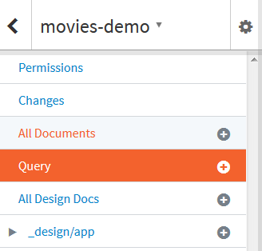

This tutorial shows you how to build and query your data using Cloudant Query from the dashboard. If you learn better by seeing a demonstration, watch these videos first:
If you don't have a Bluemix account, click Sign Up. Complete the fields on the form, and click Create Account.
If you have a Bluemix account, click Log In. Provide your IBMid and password, and click Log In.
In the top navigation bar, click Catalog.
In the left navigator, under Services, check Data and Analytics.
Click Cloudant NOSQL DB.
Accept the default service, or provide a different name, and click Create. This brings you to the IBM Cloudant Bluemix Service Launch Page.
Click Service Credentials. Note your username, password, and host name. You will be able to use the URL (which also passes your username and password) to access your database from a browser.
Paste the value for your username here:
Click this button to update the URLs for the rest of this tutorial.
Click Manage.
Click Launch to load the Cloudant dashboard.
Replicating and viewing the sample database
If you do not already have the IBM Cloudant service provisioned in Bluemix, follow these steps to provision the service. ▼More
From the Cloudant dashboard, replicate the https://examples.cloudant.com/movies-demo remote database into your account. If you need help creating the replication request, refer to the Replication video and Tutorial on the Create a Replication Job page.
After replicating the movies-demo database, in a browser, access the database to see a list of documents. https://<account>.cloudant.com/movies-demo/_all_docs?limit=20&include_docs=true
You can also see a list of indexes defined in the database. https://<account>.cloudant.com/movies-demo/_index
Creating an index
If you do not already have the IBM Cloudant service provisioned in Bluemix, follow these steps to provision the service. ▼More
Next, open the database.
Next to Query, click New Query Index. 
Paste the following JSON text into the Index text box, then click Create Index.
{
"index" : {
"fields": [
"Person_dob"
]
},
"name":"age-index",
"type":"json"
}
You can automatically index all fields using this syntax: { "index": {}, "type": "text" }
Next to Cloudant Query, click left arrow to return to the All Documents view.
Querying an index
If you do not already have the IBM Cloudant service provisioned in Bluemix, follow these steps to provision the service. ▼More
Click Query from the menu.

Paste this JSON text into the Cloudant Query text field, and click Run Query. This example finds all of the movies with Robert De Niro with any release year.
{
"selector" : {
"Person_name": "Robert De Niro",
"Movie_year": {"$gt": 0}
}
}
Run a new query using the following JSON text. This example sorts by the year released, limits the results to the first 10 movies, and skips the first movie.
{
"selector" : {
"Person_name": "Robert De Niro",
"Movie_year": {"$gt": 0}
},
"sort": ["Movie_year"],
"limit": 10,
"skip": 1
}
Run a new query using the following JSON text. This example finds all of the movies with Robert De Niro with any release year. and returns the movie name and year released sorted by movie year.
{
"selector" : {
"Person_name": "Robert De Niro",
"Movie_year": {"$gt": 0}
},
"fields": ["Movie_name", "Movie_year"],
"sort": ["Movie_year"],
}
If the fields list is omitted, the entire document is returned.
Run a new query using the following JSON text. This example finds all De Niro films from a specific year, 1978.
{
"selector" : {
"Person_name": "Robert De Niro",
"Movie_year": 1978
}
}
Run a new query using the following JSON text.
{
"selector" : {
"Movie_earnings_rank": 191
}
}
You should see an error indicating "There is no index available for this selector". If the user submits a query that does not have a suitable index, then it is up to the developer to decide at the application layer how such errors are handled. Cloudant does not automatically re-index the whole data set.
Run a new query using the following JSON text. This example selects Robert De Niro movies and sorts in ascending order of the person’s name with a secondary sort on the year the movie was released.
{
"selector" : {
"Person_name": "Robert De Niro"
},
"sort": [
{"Person_name":"asc"},
{"Movie_year":"asc"}
]
}
For the “text” type, you need to append :number or :string to the sort field as shown below.